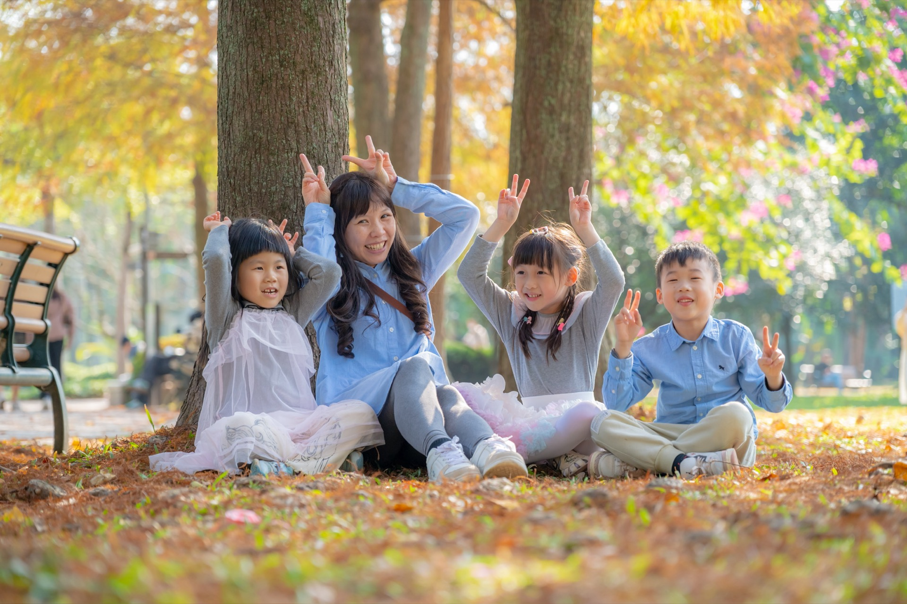

幼兒園畢業照服裝的歷史、文化演變與現代拍攝風格 2025年3月13日 從學士服起源談起，說明畢業服裝如何成為象徵、台灣幼兒園常見服裝類型、日式歐美與在地風格差異，以及服裝與場景如何搭配出有故事感的畢業照。 閱讀全文
 台灣幼兒園畢業照攝影服務的常見方案、規格與選擇比較 2025年3月13日 從家長與學校角度整理台灣幼兒園畢業照攝影的服務類型、拍攝規格、方案差異、價格因素與挑選要點，幫助園所做出適合的決策。 閱讀全文